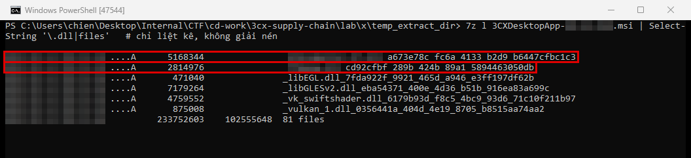
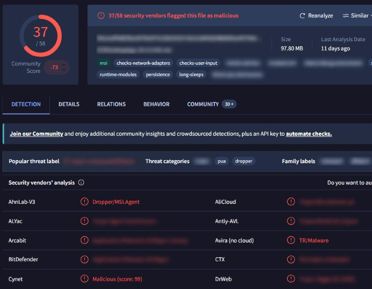

3CX Supply Chain
- Lab: 3CX Supply Chain trên CyberDefenders. Nhóm Threat Intel, độ khó Easy, đã retired.
- Dữ liệu: một file cài đặt MSI (khoảng 98 MB) của 3CX Desktop App bản Windows bị cài mã độc (trojanized).
- Công cụ: 7-Zip để liệt kê file bên trong MSI (chỉ liệt kê, không giải nén hay chạy), VirusTotal, công cụ đọc metadata của file MSI (stream OLE summary), các báo cáo threat intel công khai về vụ 3CX.
- Quy ước:
- Bài không ghi giá trị đáp án. Chỗ nào cần tra cứu có dòng "Hướng giải" chỉ nơi tìm.
- Khung đỏ trên ảnh là chỗ cần chú ý, vùng làm mờ là giá trị trùng với đáp án hoặc để lộ đáp án.
Tóm tắt kết quả
- Tháng 3/2023, giới nghiên cứu phát hiện kẻ tấn công xâm nhập môi trường build phần mềm của 3CX (nhà cung cấp giải pháp tổng đài) và chèn mã độc vào bộ cài hợp lệ của 3CX Desktop App, cả bản Windows lẫn macOS.
- Bộ cài Windows thả hai DLL: một DLL bị sửa để chứa mã nạp độc hại (vẫn mang chữ ký số hợp lệ của 3CX), và một DLL hợp lệ của Microsoft có phần dữ liệu mã hóa gắn thêm vào cuối file.
- Khi ứng dụng 3CX chạy, nó tự nạp DLL độc hại theo cơ chế DLL side-loading (ứng dụng hợp lệ nạp nhầm DLL độc nằm cùng thư mục).
- DLL độc hại kiểm tra môi trường ảo hóa và ngủ dài ngày để né sandbox, rồi đọc và giải mã payload gắn ở cuối DLL thứ hai.
- Chiến dịch được các báo cáo công khai gán cho một nhóm tấn công do nhà nước Triều Tiên hậu thuẫn.
Bước 1: phiên bản bị ảnh hưởng
- Mục tiêu: biết có bao nhiêu phiên bản 3CX Desktop App cho Windows bị gắn nhãn mã độc.
- Cách làm: đối chiếu các thông báo của 3CX và báo cáo của Mandiant, CrowdStrike về vụ việc.
- Nhận định:
- Các báo cáo liệt kê một số bản build Windows thuộc nhánh 18.12 bị cài mã độc. File MSI trong lab là một trong các bản đó.
- Hướng giải: số phiên bản có trong danh sách bản bị ảnh hưởng của các báo cáo nêu trên.
Bước 2: thời điểm tạo file MSI
- Mục tiêu: lấy thời điểm tạo file MSI theo UTC.
- Cách làm: đọc stream OLE summary information của file MSI (file MSI là tài liệu dạng OLE Compound Document), lấy thuộc tính thời gian tạo (
create_time). - Nhận định:
- Thời điểm tạo cho biết bộ cài độc hại được đóng gói trước khi vụ việc bị công bố.
- Hướng giải: giá trị nằm ở thuộc tính thời gian tạo trong summary information của MSI. Ghi theo dạng ngày giờ UTC đến phút.
Bước 3: các DLL do MSI thả ra
- Mục tiêu: xác định hai DLL độc hại trong bộ cài.
- Cách làm: liệt kê file trong CAB của MSI, đối chiếu với các advisory về vụ 3CX.
7z l "3CXDesktopApp-<phiên bản>.msi" | Select-String "\.dll_"


- Nhận định:
- DLL thứ nhất là thư viện mà ứng dụng 3CX nạp khi khởi động. Nó được ký bằng chứng chỉ hợp lệ của 3CX Ltd. nhưng bị chèn mã nạp độc hại ở điểm vào của DLL.
- DLL thứ hai là một thư viện DirectX hợp lệ của Microsoft, gắn thêm khoảng 285 KB dữ liệu mã hóa ở cuối file (overlay). Phần dữ liệu này bắt đầu sau một chuỗi đánh dấu cố định.
- Hướng giải: tên hai DLL có trong danh sách file của MSI. Thứ tự ghi theo chiều nạp: DLL bị ứng dụng nạp trước, DLL chứa payload sau.
Bước 4: kỹ thuật nạp DLL và loại mã độc
- Mục tiêu: ánh xạ cách nạp DLL sang MITRE ATT&CK và xác định loại mối đe dọa của hai DLL.
- Cách làm: tra MITRE ATT&CK cho hành vi DLL side-loading và DLL search order hijacking. Xem nhãn phân loại (threat category) của hai DLL trên VirusTotal.
- Nhận định:
- Ứng dụng hợp lệ nạp DLL theo thứ tự tìm kiếm thư mục. Kẻ tấn công đặt DLL độc vào đúng chỗ đó. Hành vi này thuộc technique Hijack Execution Flow.
- Hai DLL được xếp loại là mã độc giả dạng phần mềm hợp lệ, có vai trò backdoor loader.
- Hướng giải: ID technique ở mức technique cha (không có sub-technique) trên trang MITRE ATT&CK. Loại mối đe dọa là nhãn phân loại chung mà VirusTotal và các advisory gán cho hai DLL.
Bước 5: né tránh môi trường phân tích
- Mục tiêu: xác định technique MITRE ATT&CK cho việc né máy ảo và sandbox, và hypervisor bị nhắm tới.
- Cách làm: đọc phần anti-analysis trong báo cáo phân tích DLL độc hại và tab Behavior trên VirusTotal.
- Nhận định:
- DLL độc hại ngủ 7 ngày trước khi hoạt động và kiểm tra dấu vết của một nền tảng ảo hóa. Hành vi này thuộc technique Virtualization/Sandbox Evasion.
- Hướng giải: ID technique trên trang MITRE ATT&CK tương ứng. Tên hypervisor có trong phần kiểm tra artifact ảo hóa của báo cáo.
Bước 6: thuật toán giải mã payload
- Mục tiêu: tìm thuật toán DLL độc hại dùng để giải mã phần overlay.
- Cách làm: đọc phần mô tả cơ chế giải mã trong báo cáo phân tích DLL độc hại.
- Nhận định:
- DLL độc hại tìm chuỗi đánh dấu trong DLL thứ hai, đọc phần dữ liệu phía sau và giải mã bằng một thuật toán mã hóa dòng (stream cipher). Payload sau khi giải mã liên lạc với máy chủ C2 của kẻ tấn công.
- Hướng giải: tên thuật toán có trong phần giải mã overlay của báo cáo.
Bước 7: nhóm tấn công
- Mục tiêu: xác định nhóm đứng sau vụ tấn công.
- Cách làm: đối chiếu phần attribution trong báo cáo của Mandiant và CrowdStrike.
- Nhận định:
- Các báo cáo gán chiến dịch cho một nhóm APT do nhà nước Triều Tiên hậu thuẫn. Các hãng theo dõi nhóm này dưới nhiều tên khác nhau.
- Hướng giải: dùng tên phổ biến nhất của nhóm, tên mà các báo cáo về 3CX nhắc tới nhiều nhất.